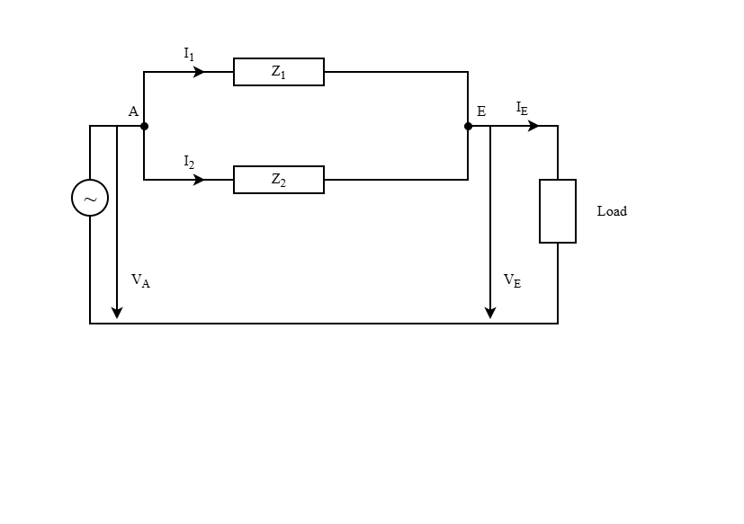
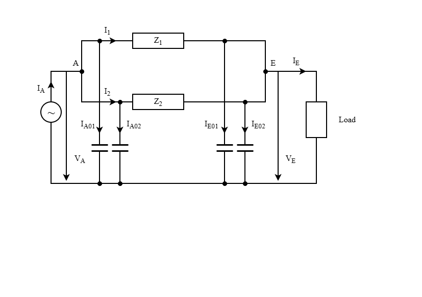
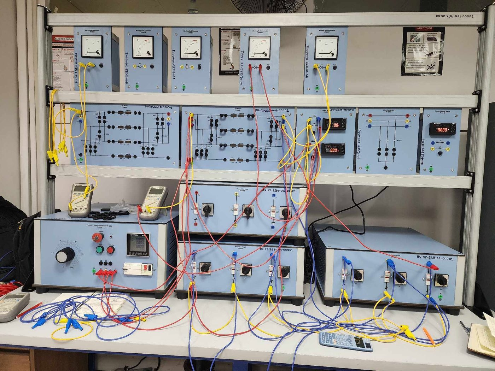
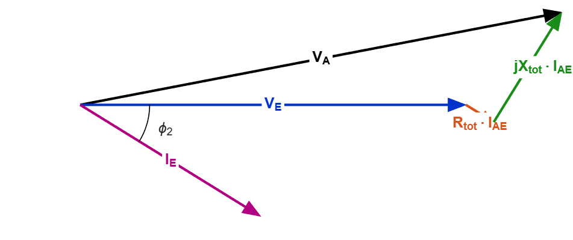
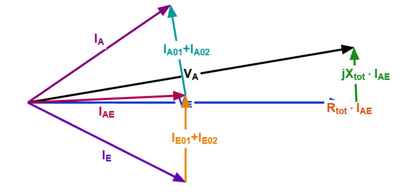
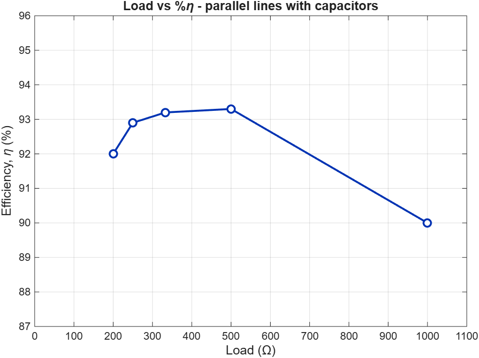
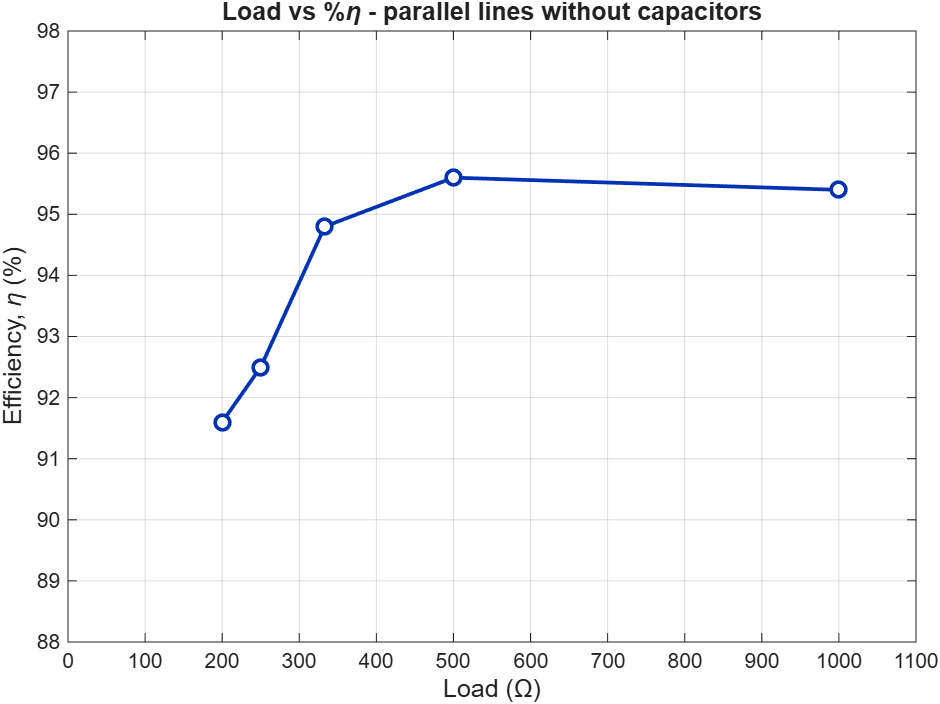
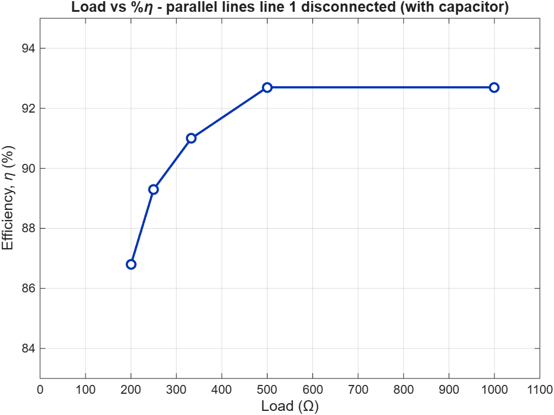

Overview
I recorded voltages, currents, active and reactive power and power factor for three configurations, then used MATLAB to rebuild the equivalent circuit from the measurements, estimate the line parameters and draw the phasor diagrams to scale.
Problem statement
Parallel lines are used to carry more power and add redundancy. Engineers need to know how current divides between the lines, how line capacitance changes voltage and reactive power, and what happens to efficiency and voltage when one line is lost.
Engineering objectives
- Measure how current is distributed between two lines connected in parallel.
- Investigate how the line operating capacitances affect voltages and currents.
- Compare efficiency and voltage regulation with both lines, without capacitors, and with one line disconnected.
System architecture
Each line module is 13 Ω in series with 290 mH, modelled as a π-network with shunt susceptance B at each end. With the shunt elements neglected, the two lines reduce to one series impedance Ztot = Rtot + jXtot.


Methodology
- Connected the two line models in parallel to a variable three-phase supply at 190.8 V per phase with resistive–inductive loads.
- Stepped the load through five R–L settings, from light to heavy.
- Measured line currents, sending- and receiving-end voltages, active and reactive power, and power factor for: (1) both lines with capacitors, (2) both lines without capacitors, (3) line 1 disconnected.
- Estimated Rtot, Xtot and B for each case by least-squares fitting in MATLAB.
- Plotted efficiency against load, IE against UE and IA, and drew phasor diagrams to scale.
Hardware and software
Hardware
- 2 × overhead line models
- Variable three-phase power supply
- Resistive, inductive and capacitive load banks
- Line capacitor module
- Power and power-factor meters, voltmeters, ammeters, multimeters
Software & tools
- MATLAB (parameter fitting, phasor diagrams, graphs)
- diagrams.net (equivalent circuits)
Implementation photographs

Results





| Case | Rtot (Ω) | Xtot (Ω) | B per end (S) |
|---|---|---|---|
| 1: parallel, with capacitors | 14.46 | 53.89 | 1.77 × 10⁻³ |
| 2: parallel, without capacitors | 13.43 | 52.94 | – |
| 3: line 1 disconnected | 24.74 | 91.80 | 7.88 × 10⁻⁴ |
Performance metrics
Key findings
- With capacitors: at light load the charging current made the sending end export reactive power, and the load voltage rose above the supply (the Ferranti effect). The sending-end power factor improved from 0.43 to 0.99 as load increased.
- Without capacitors: the two lines shared current almost equally at every step, confirming they were nearly identical.
- One line disconnected: the series impedance roughly doubled, the load voltage fell fastest (to 133.7 V) and efficiency dropped.
- Efficiency peaked at light-to-medium load and then fell as I²R losses grew with current.
Links
- GitHub repository (measured data, MATLAB code, figures and full report)